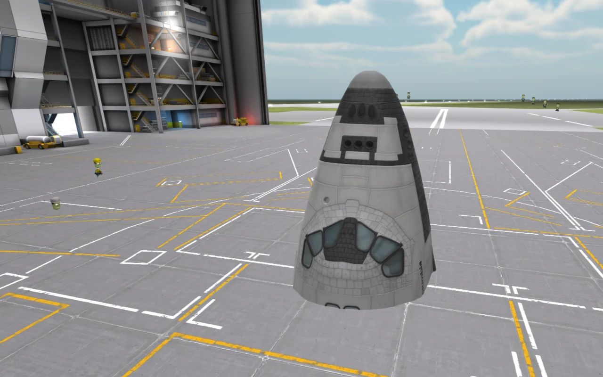
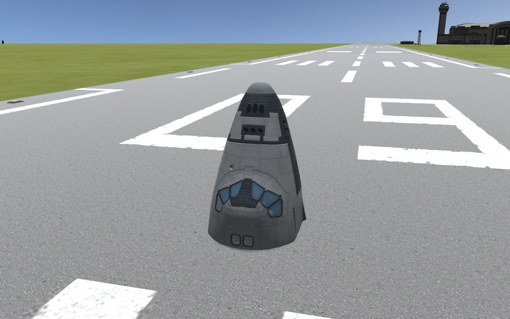
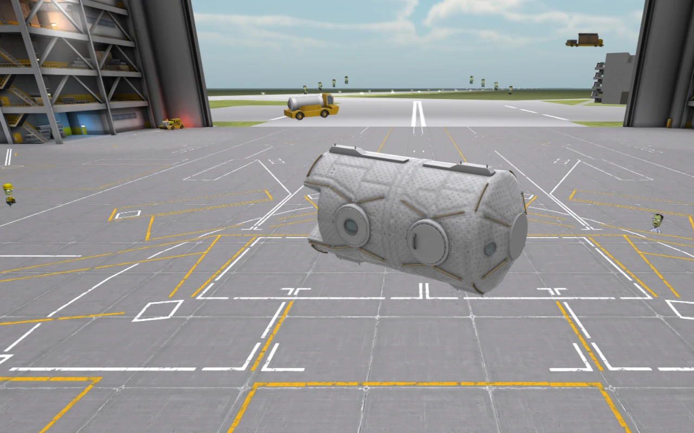
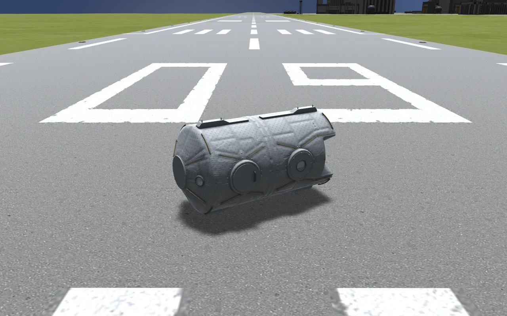
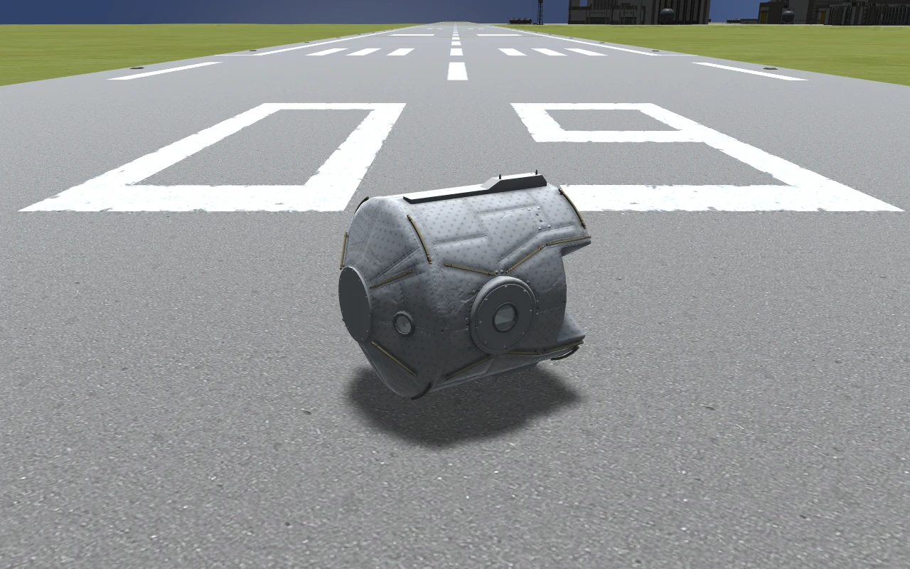

ShineFix home
← Back to supported mods
Shuttle Orbiter Construction Kit
Optics verified
Human tested
Version 1.1.8
Compatibility evidence
Original screenshot gallery
Parts
OV-100 Forward Fuselage Module


OV-100 Payload Bay Research Module Type A


OV-100 Payload Bay Research Module Type B
